Progettare Casa Online
Progettare-Casa è un moderno strumento online che rende autonoma la progettazione degli interni. Crea prima una precisa planimetria 2D della tua casa e visualizzala come modellazione 3D realistica nel browser. Sperimenta diverse idee di arredamento – dalla disposizione dei mobili al rendering 3D dei tuoi spazi abitativi.
Inizia a progettare gratisUsa il pianificatore di ambienti per la tua casa da sogno
Trasloco: Pianifica il nuovo spazio prima di acquistare i mobili e risparmia tempo e denaro. Confronta diversi layout e trova la disposizione perfetta senza spostare nulla.
Ristrutturazione: Presenta il progetto al geometra o all'impresa edile. La planimetria con dimensioni precise trasmette l'idea progettuale all'architetto o al geometra.
Fai-da-te e hobbisti: Per chi ama progettare in autonomia: sperimenta diverse disposizioni di mobili, esplora il design parametrico e trova la soluzione perfetta per ogni stanza.
Agenti immobiliari e sviluppatori: Mostra ai clienti le potenzialità di ogni spazio con planimetrie chiare e rendering 3D< degli interni. Semplifica le trattative e accelera le vendite.
Prova il pianificatore di ambienti 3D gratuitamente
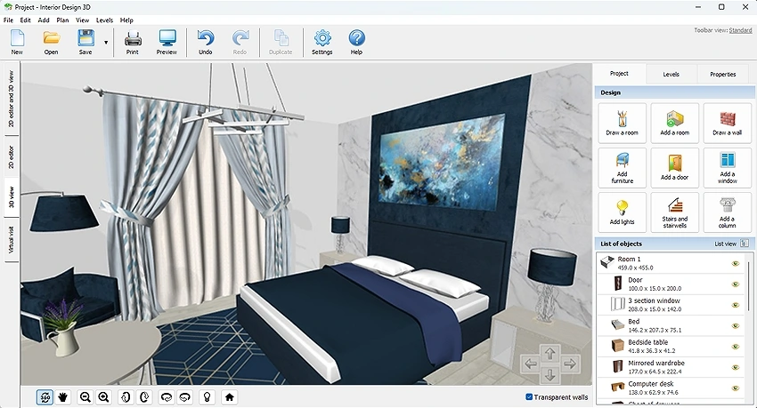
Crea i tuoi ambienti con il programma di modellazione 3D e visualizza il tuo design d'interni. Sperimenta disposizioni di mobili e rendering 3D dei tuoi spazi prima ancora di acquistare. Ecco cosa è incluso:
Piano 3D realistico
Oltre 750 modelli di mobili
Stima dei costi
Progetti demo pronti
Come progettare casa passo dopo passo
Con Progettare-Casa bastano competenze digitali di base per creare la tua planimetria professionale.
Disegna le pareti
Definisci le dimensioni della stanza inserendo larghezza e lunghezza in metri quadri. Disegna le pareti con precisione millimetrica grazie alla griglia in scala integrata.
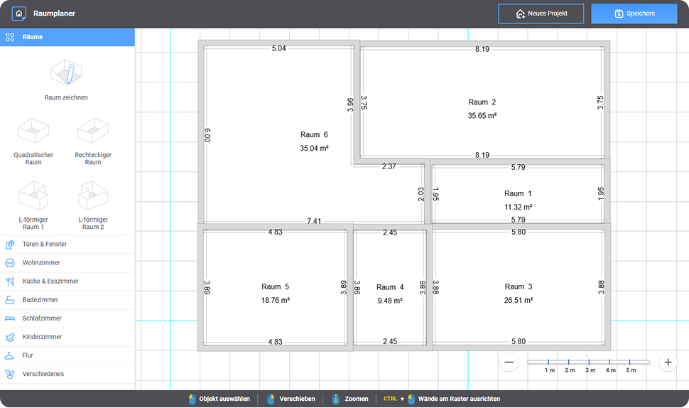
Aggiungi finestre e porte
Posiziona porte e finestre nelle pareti per ottenere una planimetria 2D realistica del tuo spazio. Scegli tra diverse tipologie di aperture dal catalogo integrato.
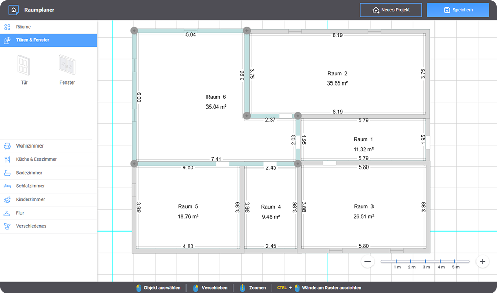
Posiziona i mobili
Scegli i mobili dalla libreria di arredamento e sistemali nella stanza con un semplice drag and drop. Ruota, ridimensiona e prova quante combinazioni vuoi.
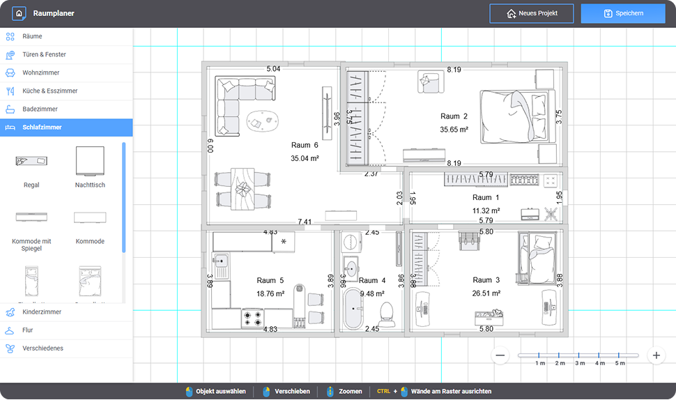
Aggiungi decorazioni e texture
Personalizza pavimenti, pareti e mobili con texture e materiali dal catalogo — oltre 1.000 opzioni tra cui scegliere per dare carattere al tuo spazio.
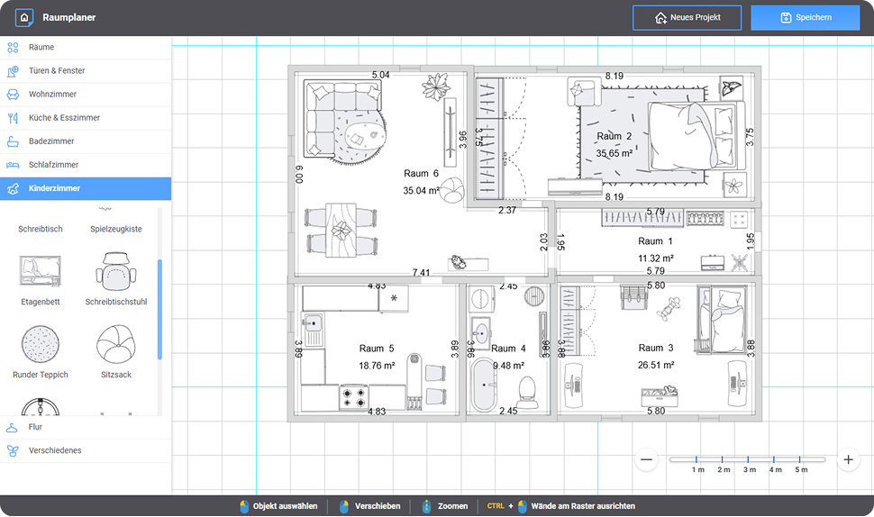
Salva e scarica il progetto
Esporta la tua planimetria e visualizza lo spazio in 3D per avere un'idea realistica del risultato. Condividila con il tuo architetto, geometra o appaltatore.
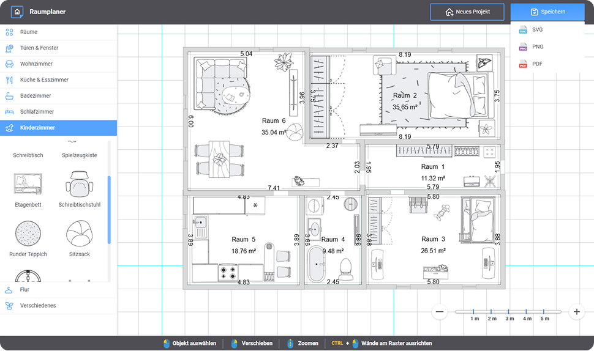
Cosa puoi realizzare con Progettare-Casa
Dalla planimetria 2D alla visualizzazione 3D: il nostro strumento copre ogni fase della progettazione interni.
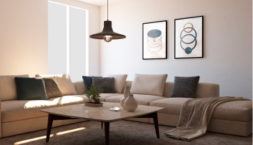
Progettazione interni 2D
Crea planimetrie 2D in scala reale per qualsiasi stanza della casa, con misure precise al centimetro.
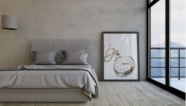
Modellazione 3D e Rendering 3D
Dalla planimetria 2D alla modellazione 3D completa: ottieni un rendering 3D realistico del tuo spazio direttamente nel browser, senza software aggiuntivi.
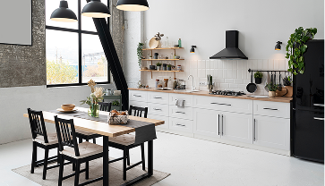
Arredamento e texture
Scegli tra 300+ mobili e 1.000+ texture per personalizzare ogni stanza con il tuo stile unico.
Strumenti professionali per progettare i tuoi ambienti
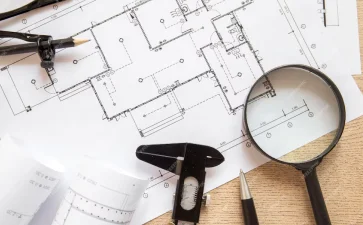
Progettazione individuale degli spazi
Carica la planimetria esistente o disegna le pareti direttamente nello strumento online. Tutte le forme — rettangolari, ad L o personalizzate — si definiscono con precisione in metri quadri.
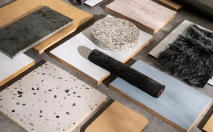
Superfici & Materiali
Nel pianificatore 3D scegli rivestimenti per pareti, pavimenti e soffitti da oltre 1000 texture nel catalogo. Integra anche materiali personalizzati per un effetto di rendering 3D realistico.
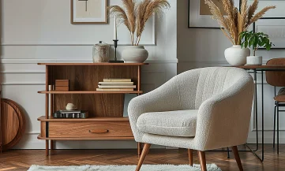
Ampia libreria di mobili
Oltre 300 varianti di mobili disponibili nel software. Modifica dimensioni, colori e stili a piacere — dal design parametrico moderno fino al classico senza tempo.
Illuminazione
Combina lampadari, applique e lampade da terra a tuo piacimento. Regola intensità e temperatura del colore per trovare la soluzione luminosa più confortevole per ogni stanza.
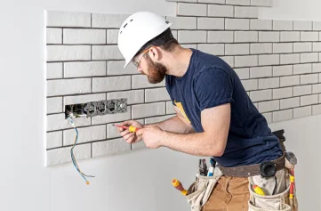
Impianti tecnici
Posiziona prese, interruttori e punti luce secondo la planimetria elettrica. Imposta altezze e personalizza i componenti — utile per comunicare le esigenze impiantistiche all'ingegnere o all'architetto che si occuperà del progetto esecutivo certificato.
Preventivo dei costi
Pianifica il budget tenendo conto di manodopera e materiali. Crea elenchi d'acquisto per ogni stanza e ottimizza le spese — ottimo punto di partenza per discutere il budget con il professionista abilitato che seguirà la pratica ufficiale.
Software per progettare casa: funzionalità avanzate, uso gratuito
Tutto ciò di cui hai bisogno per progettare il tuo spazio abitativo, senza spendere un euro.
Risparmio di tempo
Pianifica il tuo spazio abitativo in pochi minuti, senza appuntamenti con professionisti costosi. La progettazione interni diventa immediata.
Progettazione interni precisa
Lavora con misure reali e principi di design parametrico: ottieni un progetto fedele alla realtà, perfetto per la ristrutturazione, il trasloco o la presentazione a un professionista.
Strumento online gratuito
Nessun software da installare. Accedi dal browser — Windows, Mac o Linux — e inizia subito a progettare casa gratuitamente.
Libreria arredamento
Oltre 300 modelli di mobili e arredamento da posizionare liberamente. Sperimenta diversi stili prima dell'acquisto arredamento definitivo.
Visualizzazione prima dell'acquisto
Il nostro strumento per progettare casa ti permette di sperimentare senza costi: cambia layout, colori e arredamento finché non sei soddisfatto.
Ottimizzazione dello spazio
Esplora il minimalismo e l'ergonomia degli spazi abitativi: massimizza ogni metro quadro e trova il layout perfetto per la tua casa.
Requisiti tecnici
Il nostro software per progettare casa funziona su qualsiasi dispositivo dotato di browser moderno. Nessun requisito hardware specifico.
Il tuo pianificatore di ambienti in azione
Guarda come altri utenti hanno progettato i loro spazi con Progettare-Casa.
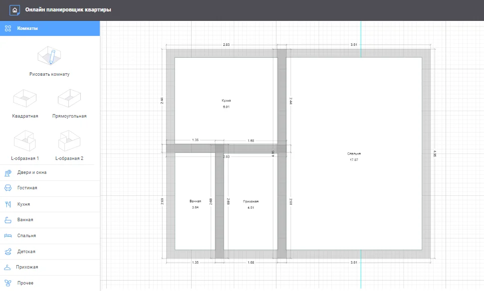
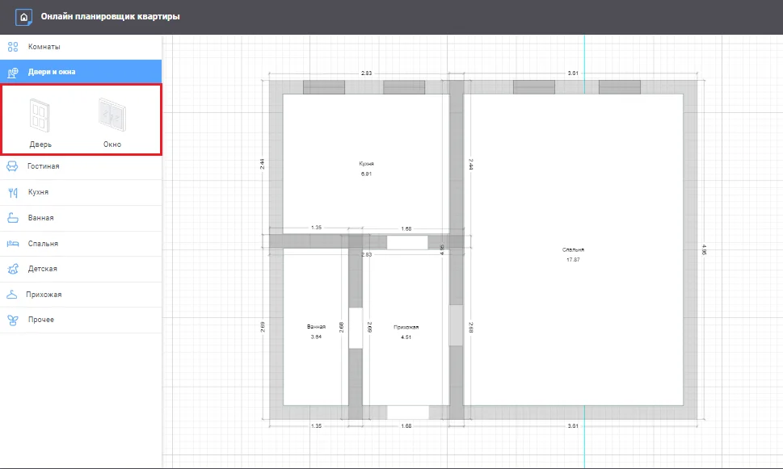
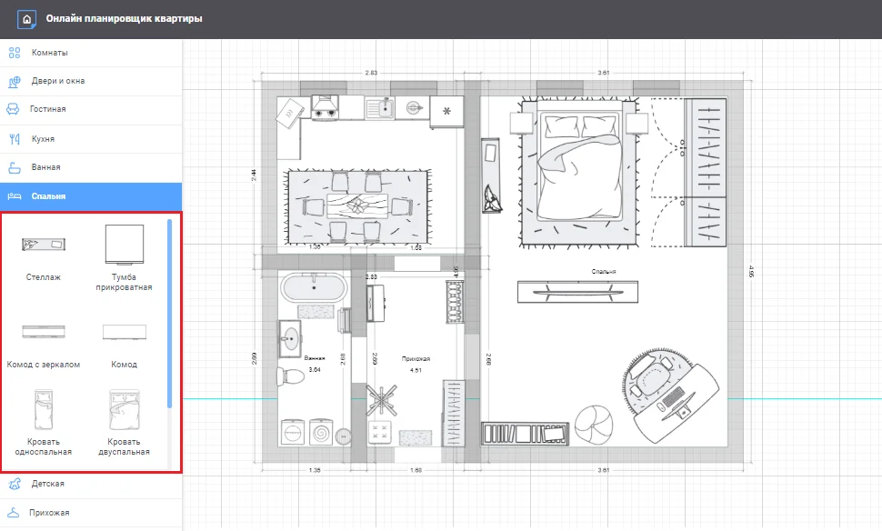
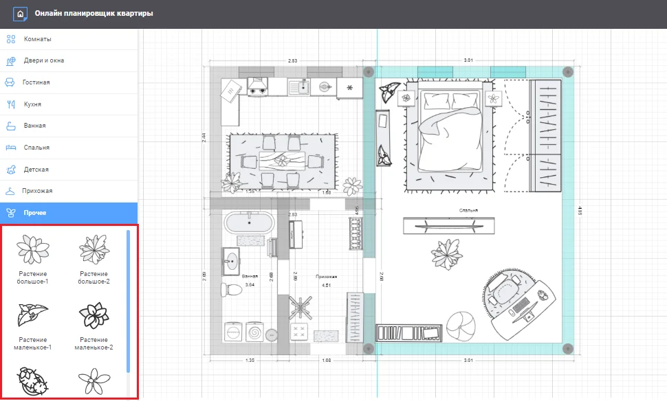
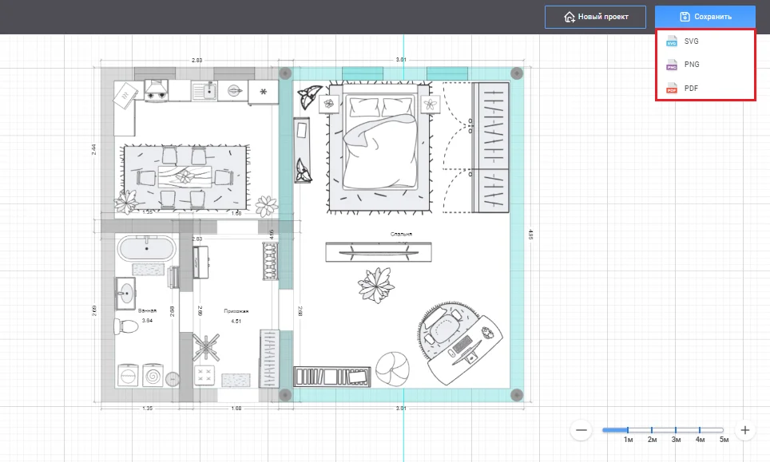
Dalla cucina alla camera da letto: progetta ogni stanza online
Il nostro strumento online copre tutti gli ambienti della casa. Scegli la stanza che vuoi progettare e inizia subito.
Dalla planimetria all'architetto: cosa puoi fare con Progettare-Casa
Le nostre planimetrie 2D riproducono gli spazi con dimensioni esatte e trasmettono l'idea progettuale in modo chiaro. Non sostituiscono la firma di un tecnico abilitato: per il permesso di costruire, il bonus ristrutturazione e le pratiche catastali serve sempre un ingegnere, architetto o geometra iscritto all'albo.
Permesso di costruire
Il Comune non accetta planimetrie non certificate per il rilascio del permesso di costruire. Con Progettare-Casa crei una planimetria con dimensioni reali e layout chiari da consegnare al tuo architetto o geometra, che la trasformerà negli elaborati tecnici firmati necessari per la pratica ufficiale.
Bonus ristrutturazione
Il bonus ristrutturazione richiede per legge documentazione firmata da un ingegnere, architetto o geometra abilitato. Progettare-Casa ti aiuta a preparare l'idea progettuale — con misure precise e layout chiari — da portare al professionista, riducendo i tempi di briefing e i costi di redazione del progetto definitivo.
Catasto italiano
Ogni immobile in Italia ha una planimetria catastale ufficiale. Usa Progettare-Casa per visualizzare e confrontare le dimensioni del tuo spazio con i dati del Catasto italiano. Qualsiasi variazione o aggiornamento della planimetria catastale richiede però l'intervento obbligatorio di un tecnico abilitato.
Comune
Le pratiche edilizie presentate al Comune devono essere firmate da un professionista abilitato e rispettare le normative urbanistiche locali. Con Progettare-Casa organizzi l'idea progettuale con dimensioni reali, poi la consegni all'architetto o geometra che redigerà la documentazione ufficiale richiesta dagli uffici comunali.
Nota legale: Progettare-Casa genera planimetrie con dimensioni esatte per uso progettuale e comunicativo. Non si tratta di elaborati tecnici certificati. Per qualsiasi pratica ufficiale — permesso di costruire, bonus fiscali, variazioni catastali, SCIA — è obbligatorio l'intervento di un professionista abilitato e iscritto all'albo (ingegnere, architetto o geometra).
Domande frequenti su Progettare-Casa
Hai ancora dubbi? Leggi le risposte alle domande più comuni.
È gratuito usare il pianificatore di ambienti online?
Sì, Progettare-Casa è completamente gratuito. Non è necessario scaricare software: funziona direttamente nel browser, senza registrazione obbligatoria. Accedi e inizia subito a progettare casa.
Posso usare il software per progettare casa su Mac e Windows?
Sì. Il nostro strumento online è compatibile con tutti i sistemi operativi: Windows, Mac e Linux. È sufficiente un browser moderno come Chrome, Firefox, Safari o Edge. Nessun requisito hardware specifico richiesto.
Posso creare una planimetria 3D?
Sì. Dopo aver disegnato la tua planimetria 2D, puoi visualizzare lo spazio in 3D direttamente nel browser per avere un'idea realistica del risultato finale prima di acquistare arredamento o avviare lavori.
Progettare-Casa è adatto ai professionisti (architetti, interior designer, geometri)?
Assolutamente. Architetti, interior designer e geometri usano Progettare-Casa per comunicare idee di progettazione interni ai clienti, creare bozze rapide di planimetrie e condividere i progetti prima della fase CAD professionale.
Posso progettare ogni tipo di stanza?
Sì: camera da letto, cucina, soggiorno, cameretta, bagno e studio / home office. Ogni tipo di stanza dispone di elementi di arredamento dedicati e texture appropriate nel catalogo.
Progettare-Casa è adatto anche a chi non ha esperienza di design?
Certamente. Il nostro strumento richiede solo competenze digitali di base. L'interfaccia è intuitiva e guidata passo dopo passo: chiunque può creare una planimetria professionale in pochi minuti, anche senza esperienza di progettazione CAD o interior design.
Come posso usare Progettare-Casa per richiedere il bonus ristrutturazione?
Progettare-Casa crea planimetrie con dimensioni precise che puoi usare come base visiva per il progetto di ristrutturazione. Ti aiutano a comunicare l'idea in modo chiaro al professionista — ingegnere, architetto o geometra — che dovrà redigere e firmare tutta la documentazione ufficiale richiesta per il bonus ristrutturazione. La firma di un tecnico abilitato è obbligatoria per legge: le nostre planimetrie non sostituiscono gli elaborati tecnici certificati.
La planimetria creata con Progettare-Casa è valida per il permesso di costruire e il Comune?
Le planimetrie di Progettare-Casa riproducono gli spazi con dimensioni reali e sono un'ottima base visiva da condividere con l'architetto o il geometra. Non sono elaborati tecnici validi per la presentazione ufficiale al Comune: il permesso di costruire, la SCIA e qualsiasi pratica edilizia richiedono documentazione firmata da un professionista iscritto all'albo. Il nostro strumento accelera la fase di briefing con il tecnico e riduce i tempi di redazione, ma non sostituisce il lavoro dell'ufficio tecnico.